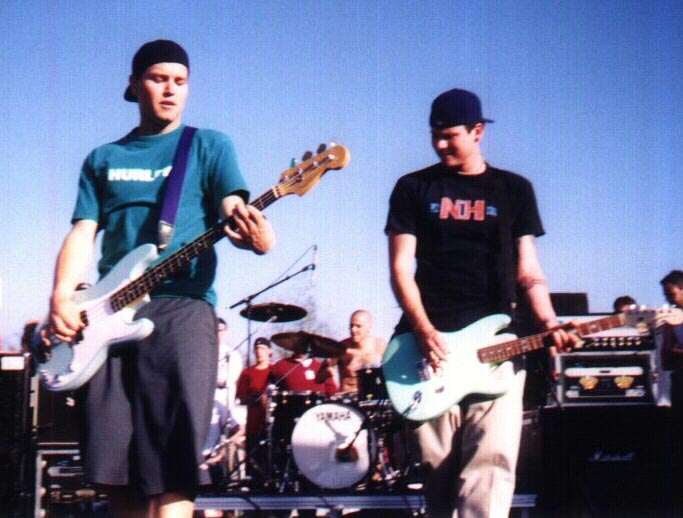

Crappypunkrock.com - All about Blink-182
Sources Cited
- "Blink-182." Wikipedia. Wikimedia Foundation, 26 Sept. 2014. Web. 29 Sept. 2014. http://en.wikipedia.org/wiki/Blink-182.
- http://www.bloggembel.com/6064/blink-182-kembali-ke-industri-musik-dengan-album-baru.html
- http://prince.org/msg/8/366642?pr
